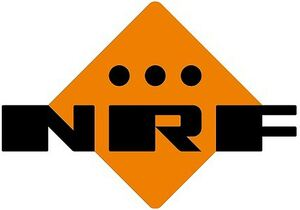

Trade Mark Journal No.2025/022 30 May 2025
WO0000001746866 (7,9,11,37)
Office of origin: European Union Intellectual Property Office (EUIPO)
Date of International Registration:15 June 2023
Date of designation in the UK:
3 February 2025

The mark contains the colours orange, black and white.
- Class 7
- Radiators for vehicles; engine cooling radiators; intercoolers (coolers for engines); oil coolers for motors; oil coolers for engines; oil coolers (vehicle engine parts); oil coolers for motors and engines; fans for motors and engines; radiator fans; fan clutches; clutches for machines; expansion tanks (parts of machines); expansion tanks (parts of vehicle cooling radiators); dosing valves (parts of machines); compressors; air blowers; pumps, compressors and blowers; blowers (machines); valves; exhaust gas recirculation (egr) valves for motors and engines; exhaust gas recirculation (egr) coolers for motors and engines; water pumps; auxiliary water pumps; cooling radiators for motors and engines; scr (selective catalyst reduction) dosing modules (parts of engines).
- Class 9
- Thermostats; electric thermostats; thermostats for vehicle engines; temperature control apparatus (thermostats) for machines; thermostat housings (parts of thermostats); temperature control apparatus (thermostats); resistors; blower motor resistors: pressure switches; coils, electric; coolant-temperature sensors; level sensors; gas sensors; exhaust gas temperature sensors; temperature sensors; pressure sensors; exhaust gas pressure sensors; coolant level sensors.
- Class 11
- Cooling installations; cooling apparatus and appliances; cooling systems for motor cars; heating and cooling systems for motor cars; air conditioning installations; heating installations; heating apparatus; parts of cooling, heating and air conditioning installations; radiators; radiators, electric; air cooling apparatus; cooling fans; expansion tanks for central heating installations; refrigerant condensers; evaporators; cooling evaporators; cooling elements; heaters; driers (air -); driers for refrigeration systems; receiver air driers; hot air blowers; electrically powered blowers for ventilation; electrically powered air blowers for air-conditioning purposes; temperature limiters for central heating radiators [thermostatic valves] incorporating expansion rods; radiator valves; valves (thermostatic -) [parts of heating installations]; temperature limiters [valves] for central heating radiators; valves (solenoid controls for automatically operating -) [parts of heating installations]; mechanisms for controlling fluid level in tanks (valves); coils for heating; coils for cooling; coils (parts of distilling, heating or cooling installations); compressor clutch coils.
- Class 37
- Installation, maintenance and repair of cooling, heating and air conditioning appliances and installations; installation, maintenance and repair of parts of cooling, heating and air conditioning installations; advisory services relating to the installation of heating, cooling and air conditioning installations and parts of the aforementioned installations.
NRF Holding B.V.
Representative: LANDMARK B.V., Smaragdweg 2, NL-3817 GM Amersfoort, NETHERLANDS